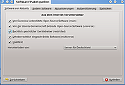
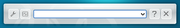
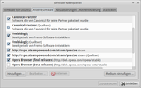

Paketquellen freischalten
 Programme werden bei Ubuntu mittels spezieller Pakete (.deb) installiert. Diese Pakete werden in der Regel aus Paketquellen (Repositories) bezogen. Paketquellen werden einerseits im Internet zur Verfügung gestellt, andererseits können auch Datenträger wie CDs oder DVDs als Paketquelle dienen. Dieser Artikel beschreibt, wie man die vorhandenen Paketquellen ergänzt bzw. verändert.
Programme werden bei Ubuntu mittels spezieller Pakete (.deb) installiert. Diese Pakete werden in der Regel aus Paketquellen (Repositories) bezogen. Paketquellen werden einerseits im Internet zur Verfügung gestellt, andererseits können auch Datenträger wie CDs oder DVDs als Paketquelle dienen. Dieser Artikel beschreibt, wie man die vorhandenen Paketquellen ergänzt bzw. verändert.
Während Kubuntu die Muon Paketverwaltung verwendet (bis Ubuntu 11.04 wurde KPackageKit eingesetzt), verwenden alle anderen Ubuntu-Varianten – direkt oder indirekt – den Paketmanager Synaptic, um Paketquellen zu verwalten. Prinzipiell kann die zugrundeliegende Datei /etc/apt/sources.list auch von Hand bearbeitet werden – unabhängig von der Desktop-Umgebung.
Bezüglich fremder Paketquellen sind noch weitere Artikel wichtig bzw. nützlich:
Fremdquellen/-pakete - die Gefahren von Fremdquellen und Fremdpaketen
PPA - ein "Personal Package Archive" freischalten
Achtung!
Nach jeder Änderung an den Paketquellen müssen diese aktualisiert bzw. neu eingelesen werden. Die konkrete Vorgehensweise ist von der eingesetzten (grafischen) Paketverwaltung abhängig und wird in den genannten Artikeln beschrieben.
Unity (Ubuntu)/Ubuntu GNOME/Ubuntu MATE¶
Die Verwaltung der Paketquellen wird ab Ubuntu 16.04 unter Unity im Systemmenü über den Eintrag "Systemeinstellungen -> Anwendungen und Aktualisierungen" bzw. bei GNOME und MATE im Anwendungsmenü über den Eintrag "Software & Updates" aufgerufen. Bis Ubuntu 15.10 nutzte man das Software-Center. Dort gibt es unter "Bearbeiten -> Software-Paketquellen" die Möglichkeit, die Paketquellen zu ergänzen oder bestimmte zu deaktivieren.
Hinweis:
Damit das Software-Center die Paketquellen neu einliest, muss das Programm geschlossen und dann wieder gestartet werden (782953)!
Alternativ kann man grundsätzlich auch folgenden Befehl benutzen:
software-properties-gtk
KDE (Kubuntu)¶
 In KDE gibt es mehrere Möglichkeiten, die Paketquellen über ein grafisches Programm zu bearbeiten. Auch hier können sämtliche Paketquellen (de-)aktiviert, neue hinzugefügt und Authentifizierungs-Schlüssel eingelesen werden.
Muon Paketverwaltung¶
Ab Ubuntu 11.10 kann der Menü-Punkt "Einstellungen -> Software-Quellen einrichten" der Muon Paketverwaltung verwendet werden.

 -> Befehl ausführen"
-> Befehl ausführen" Xfce (Xubuntu)¶
 Xubuntu verwendet ebenfalls das Software-Center. Damit ist das Vorgehen identisch zum oben beschriebenen Verfahren.
LXDE (Lubuntu)¶
Um in LXDE die Paketquellen von Ubuntu zu verwalten, startet man die grafische Paketverwaltung Synaptic. Dieses Programm ist im Anwendungsmenü unter "Systemwerkzeuge -> Synaptic-Paketverwaltung" zu finden.
Terminal¶
 Weitere Paketquellen können auch im Terminal mit Hilfe von add-apt-repository hinzugefügt werden. Dazu muss folgender Befehl ausgeführt werden:
Weitere Paketquellen können auch im Terminal mit Hilfe von add-apt-repository hinzugefügt werden. Dazu muss folgender Befehl ausgeführt werden:
sudo add-apt-repository 'deb PFAD/ZUR/QUELLE DISTRIBUTION KOMPONENTEN'
also z.B.:
sudo add-apt-repository 'deb http://archive.ubuntu.com/ubuntu precise main restricted universe multiverse'
Danach müssen die Quellen immer mittels des Befehls apt-get update aktualisiert werden. Erst dann können Pakete aus der neuen Quelle hinzugefügt werden.
Gegebenenfalls muss noch ein Schlüssel zur Authentifizierung der Quelle hinzugefügt werden. Wie das geht, ist im Artikel apt-key beschrieben.
Problembehebung¶
Langsame Downloads¶
Bei einem deutschsprachigen Ubuntu ist in der Regel der deutsche Spiegelserver in Dresden in den Paketquellen eingetragen (Sicherheitsaktualisierungen erfolgen direkt über die Canonical-Server). Es kann passieren, dass dieser Spiegelserver überlastet ist. Sollte das längerfristig der Fall sein, ändert man diesen über
"Software-Paketquellen -> Software von Ubuntu -> Herunterladen von: -> Andere -> Besten Server auswählen".
Der Spiegelserver mit der schnellsten Anbindung für das ausgewählte Land wird nun automatisch ermittelt.
Alternativ kann man das auch über das manuelle Bearbeiten der Datei /etc/apt/sources.list erledigen. Beispiel:
bisher:
1
deb http://de.archive.ubuntu.com/ubuntu precise main restricted universe multiverse
neu:
1
deb http://ch.archive.ubuntu.com/ubuntu precise main restricted universe multiverse
Statt http://ch.archive.ubuntu.com steht praktisch in fast allen Nachbarländern von Deutschland (oder zumindest in Europa) ein entsprechender Spiegelserver zur Verfügung. Man muss daher nur das Landeskürzel entsprechend ändern. Dabei ist unter Umständen diese TLD-Liste hilfreich. Weitere Details kann man über die offizielle Liste der Spiegelserver zeitnah in Erfahrung bringen.
Experten-Info:
Zur Kontrolle, ob das gewünschte Land einen Spiegelserver bereitstellt, hilft folgender Befehl:
ping XX.archive.ubuntu.com
wobei XX hier für das jeweilige Länderkürzel steht. Erfolgt eine Antwort, ist ein Spiegel aktiv. Beendet wird der Befehl mit Strg + C .
 Übersichtsartikel
Übersichtsartikel- Erstellt mit Inyoka
-
 2004 – 2017 ubuntuusers.de • Einige Rechte vorbehalten
2004 – 2017 ubuntuusers.de • Einige Rechte vorbehalten
Lizenz • Kontakt • Datenschutz • Impressum • Serverstatus -
Serverhousing gespendet von